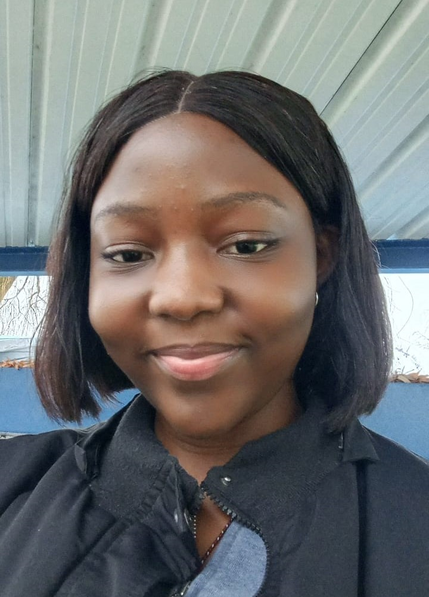

Étudiante en 2e année de Bachelor Data & IA à HETIC (Haute École de la Technologie de l'Information et de la Communication), passionnée par la data, l'intelligence artificielle et le design. À la recherche d'une alternance.

Je suis étudiante en Data et IA à HETIC, avec moins d'un an d'expérience dans les domaines de l'infographie et du commerce. Cette expérience client m'a appris à comprendre un besoin avant de proposer une solution, et c'est ainsi que je construis mes projets.
Mon objectif est d'acquérir une solide autonomie technique. Je programme en Python (Pandas, Matplotlib, Seaborn) et en HTML/CSS, je conçois des maquettes avec Figma et la gamme Adobe, et j'explore des outils d'IA (Manus, Google AI Studio, Gemini Pro, Kimi) pour prototyper des applications et automatiser des tâches avec Make.
Nettoyage, analyse exploratoire et visualisation de données avec Pandas, NumPy, Matplotlib et Seaborn.
Prompt engineering, tests comparatifs de modèles (Gemini Pro, Kimi, Manus) et création d'applications web avec des outils d'IA.
Workflows no-code avec Make pour relier un site Webflow, Airtable et Gmail.
User flow, wireframes, design system et maquettes responsives sous Figma. Conception de visuels (affiches, flyers, cartes de visite) avec la gamme Adobe.
Cheffe de projet d'une équipe de 6 personnes : répartition et suivi des tâches, rapport et présentation finale.
Accueil, écoute du besoin et conseil auprès des clients.
Nettoyage d'un jeu de données de 73 lignes et 18 variables (3,5 % de valeurs manquantes supprimées), analyse exploratoire et visualisations pour identifier les facteurs de succès d'une œuvre et prédire sa note globale.
Outils : Python, Pandas, Matplotlib, Seaborn, Jupyter Notebook
Voir le projet sur GitHub →Mini-jeu de grattage digital : le joueur choisit un casier parmi 9, le gratte et découvre instantanément s'il a gagné.
Outil : Manus
Voir le projet →Jeu futuriste : le joueur cherche un mot pour débloquer l'option selfie et trouver ses sosies dans le monde.
Outil : Manus
Voir le projet →Site de vente d'articles en ligne créé avec Google AI Studio.
Outil : Google AI Studio
Voir le projet →Automatisation reliant un site Webflow à Airtable et Gmail : traitement des formulaires d'inscription et envoi automatique d'un guide PDF par e-mail aux inscrits.
Outils : Make, Webflow, Airtable, Gmail
Concept de jeu interactif pour renforcer l'engagement client : user flow, wireframes, design system et maquettes responsives mobile et desktop. Intégration en HTML et CSS en cours.
Outils : Figma, HTML, CSS
Je recherche une alternance en Data & IA. Écrivez-moi, je réponds rapidement.